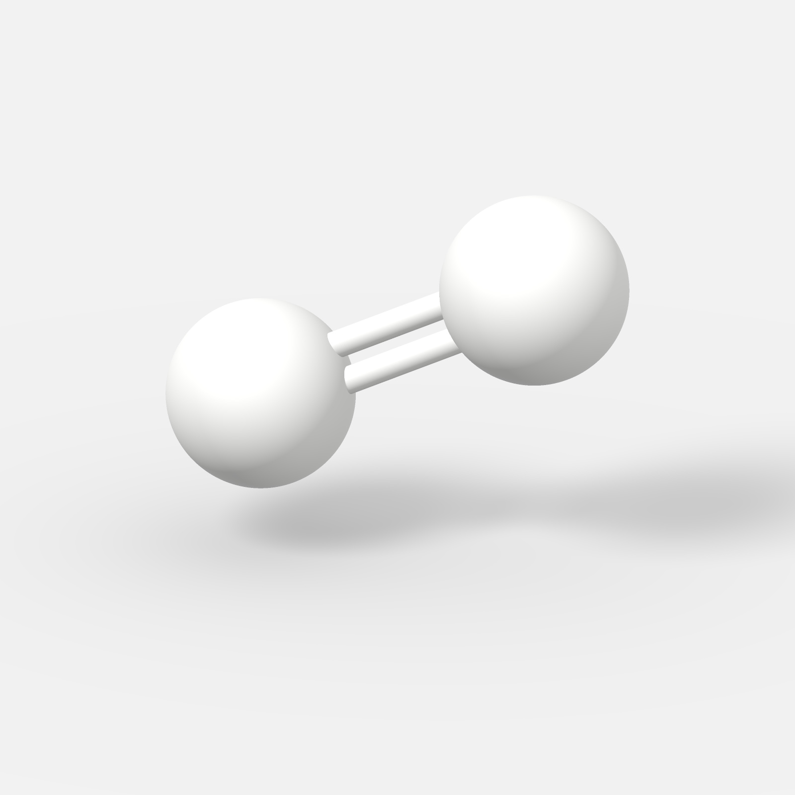

산소
O₂ · Oxygen산소는 스스로 타지 않지만 다른 물질의 연소를 돕는 지연성 가스로, 철강 제강과 유리 용해, 화학 산화 공정에 사용됩니다.
울산 등 생산 거점의 ASU에서 생산하며, 대규모 수요처에는 파이프라인으로, 중소규모 수요처에는 액화산소를 Bulk로 공급합니다.
- 특성
- 지연성, 강한 산화력, 고순도
- 주요 용도
- 철강 제강(전로·고로 취입), 유리 용해(산소부화 연소), 석유화학 산화 공정, 금속 절단·용접
- 적용 산업
- 철강, 유리, 화학, 정유 및 가스, 금속가공
- 공급방식
- 파이프라인, Bulk(액화산소)
- 액화 온도
- -183℃(1기압)